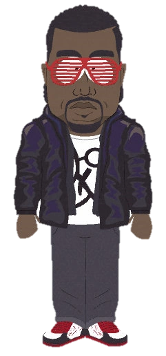

FLAPPY KANYE
SOUND ON
CHAMBER I
0
BEST
0
TURRELL / YEEZUS / DONDA
FLAPPY
KANYE
TAP / SPACE TO FLAP
CHAMBER COLLAPSED
A devotional exercise in flight through the light chambers. Drift between the monoliths. Do not touch the architecture.
A FLAPPY DEVOTIONAL